Moin Moin,
über das vergangene Wochenende gab es bei uns in Kooperation mit der Informatik
Fachschaft der Uni Oldenburg wieder eine LAN Party für die Erstsemester.
Spoiler vorweg; Es gab zwischen 18:00 Uhr und 21:00 am Freitag Probleme mit
unserem ISP (natürlich zur Beginn der LAN Party, Murphy lässt grüßen). Deswegen
gibt es dort eine Lücke in der Auswertung. Ab 21:00 war das Problem gefixt und
wir haben brauchbare Daten.
Die grundlegende Infrastruktur sieht dabei wie folgt aus.
Wir betreiben einen Steam LAN Cache im Netzwerk um Downloadanfragen nach
Spielen/Updates oder dergleichen nicht nur effizient mit Wirespeed bedienen zu
können sondern entsprechend auch die begrenzte Internetkapazität freizuhalten
für Anfragen welche nicht gecached werden können.
Alle Access Switche sind mit 10G am Core angebunden. Der LAN-Cache ist mit 40G
am Core angebunden.
Bei der Betrachtung des LAN-Cache würde man ein asymetrisches Trafficverhalten
erwarten. Die Idee des Caches ist es Content vorzuhalten und bei erneuter
Anfrage direkt ausliefern zu können. Also ist hier in Relation zueinander mehr
"Out"-going als "In"-coming wünschenswert.
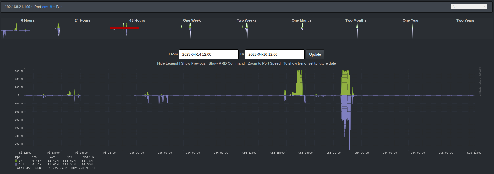
Das ist auch genau so eingetreten. Die Ausnahme am Samstagnachmittag war der
händisch getriggerte Steam Prefill unsererseits.
Die Trafficprofile der Switche auf der Freifläche lesen sich wie folgt.
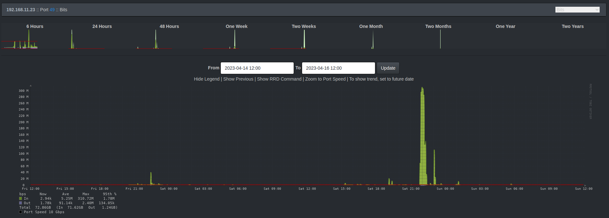
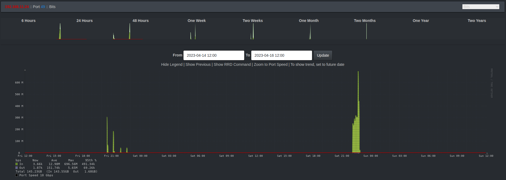
Die Gesamtauslastung Internet sieht wie folgt aus.
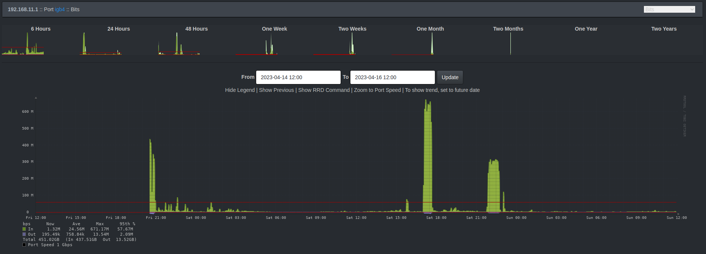
Nüchtern und ehrlich betrachtet haben wir weder den LAN-Cache noch die 10G
Anbindung an den Access Switchen gebraucht. Aber das hat uns noch nie davon
abgehalten coolen Krams mit Technik zu machen! ;)
Für WLAN Enthuasiasten dürften folgende Statistiken interessant sein.
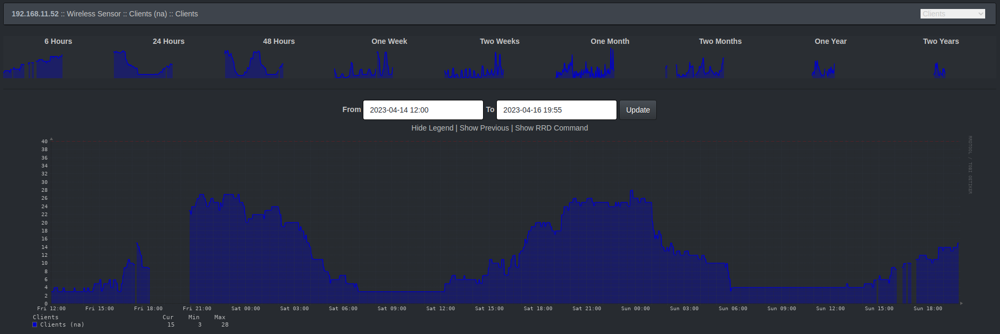
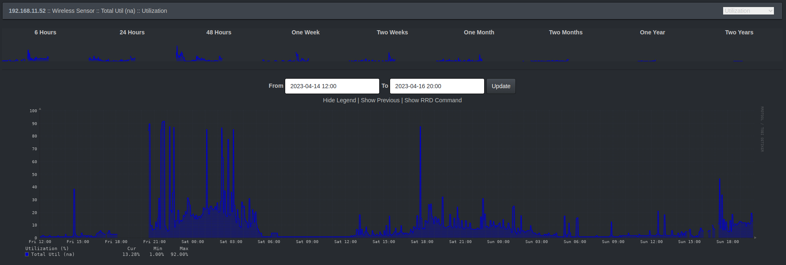
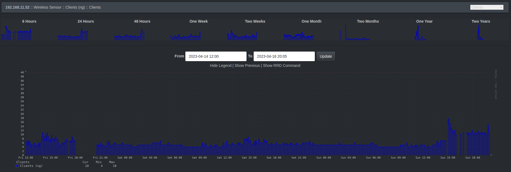
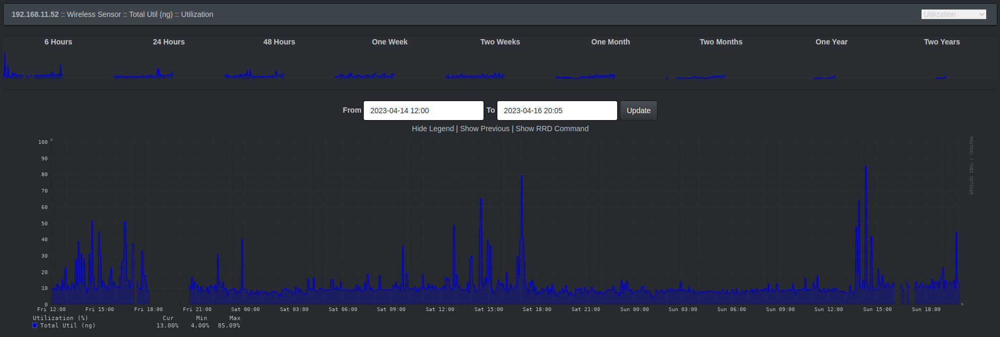
Der Access Point in der Lounge hat sichtbar mit Beginn der LAN Party immer mehr
Clients aufgenommen. Es freut uns, dass hier primär das 5 GHz aktiv ist und nur
wenig bis keine Geräte sich in das legacy 2.4 GHz Band verbinden.
Die Sache mit dem ISP Problem
Wie bereits erwähnt hatten wir zu Beginn der LAN Party um ca. 18:00 Uhr
Probleme mit der Internetleitung. Wir sind jetzt (Sonntagabend) mit der
Diagnostik etwas weiter und glauben das Problem identifiziert, wenn auch noch
nicht gelöst, zu haben.
Während der LAN Party hatten wir plötzlich mit starken Paketverlusten ins
Internet zu kämpfen.
Da wir kurzzeitig einen alternativen ISP Uplink organisieren konnten, war ab
21:00 Uhr das Problem erst einmal umgangen. Ab dann konnten wir uns auf die
Suche nach dem eigentlichen Problem begeben.
Nach bisheriger Diagnostik macht das Modem vom Provider schlapp, sobald es mit
viel Internettraffic umgehen muss und hat mit stark erhöhten Latenzen zu
kämpfen.
Unser Test sah vor, künstlich erzeugten Traffic durch Steam Prefill des
LAN-Cache zu erzeugen. Während unser eigenes ISP Modem dies nicht gut
verkraftete, deutliche Latenzen verzeichnete und sogar im Downloadspeed über
Zeit merklich nachlies, war die Alternativleitung davon total unbeeindruckt und
lieferte 500 Mbit über den gesamten Testzeitraum ohne erhöhte Latenzen.
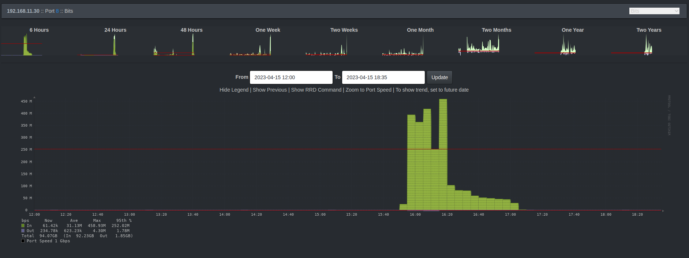
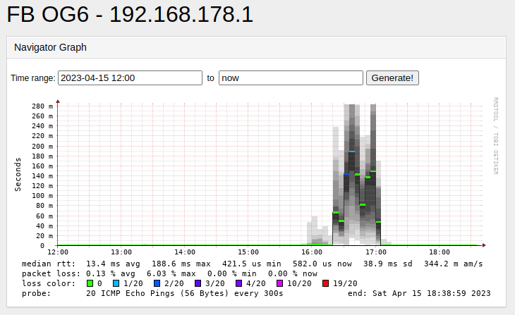
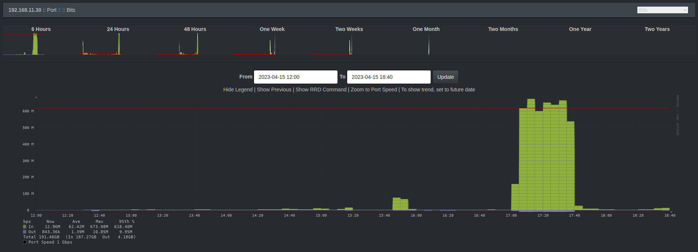
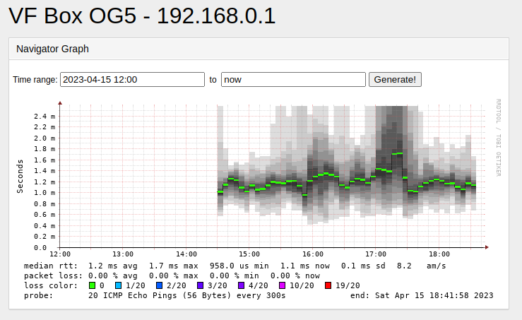
Jetzt heisst es, das defekte Modem auszutauschen.
Wir bedanken uns bei allen Gästen, Teilnehmern, Helfern, insbesondere der
Person die kurzzeitig für alternativen Internetuplink gesorgt hat. Wir hoffen
ihr hattet alle Spaß. Wir hatten ihn. Und haben mal wieder eine Menge gelernt.
Außerdem freuen wir uns auf das nächste Event im Oktober.
Nerdige Grüße
Mainframe Oldenburg
Benutzte Tools:
1. Intermapper
2. LibreNMS
3. SmokePing
{%- endfilter %}
{% endblock content %}